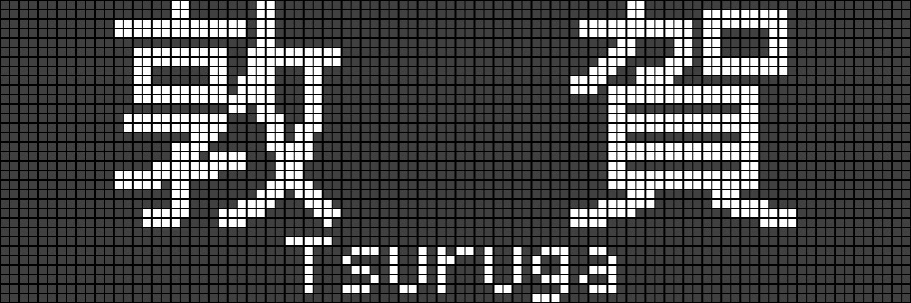
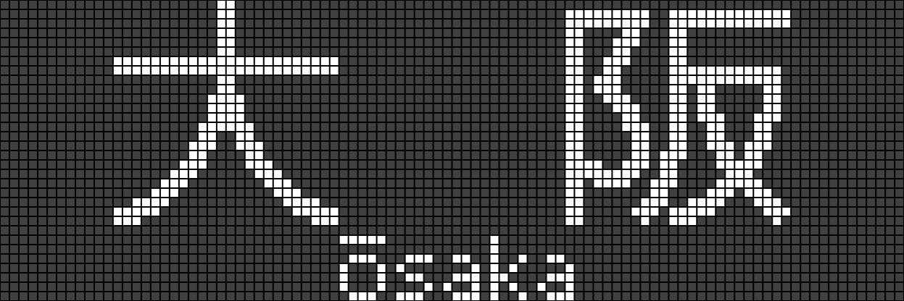
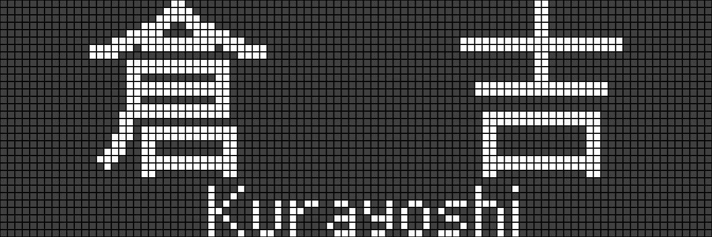
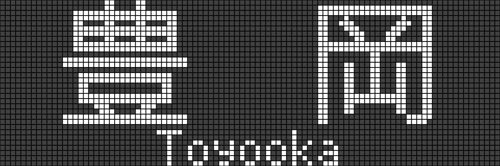
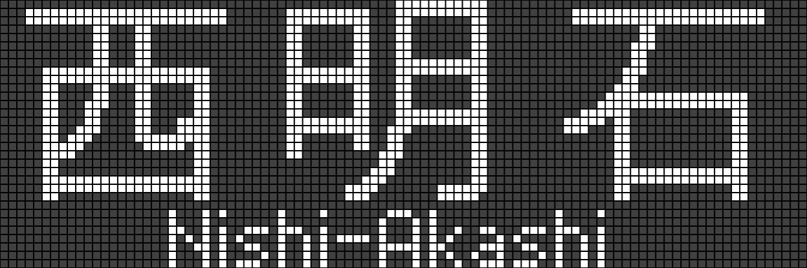
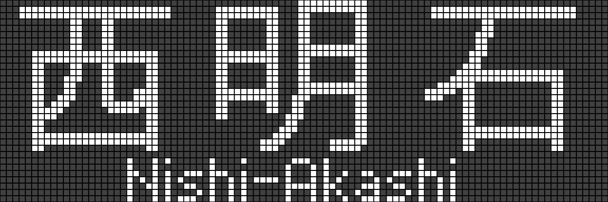

三ノ宮駅 平日発車案内

- ・・・JR西日本からのお願い！！・・・駅や車内で★★不審な荷物など★★を発見された場合はすみやかに駅係員または車掌までお知らせ下さい。
- ・・・JR西日本からのお願い！！・・・駅や車内で★★不審な荷物など★★を発見された場合はすみやかに駅係員または車掌までお知らせ下さい。
大阪 for Osaka
尼崎・京都・東西線・宝塚線方面
姫路 for Himeji
明石・播州赤穂・上郡方面
- 本日の運行は終了しました
- Today's service has finished
- 本日の運行は終了しました
- Today's service has finished
- 本日の運行は終了しました
- Today's service has finished

- 本日の運行は終了しました
- Today's service has finished
- 本日の運行は終了しました
- Today's service has finished
- 本日の運行は終了しました
- Today's service has finished
5:02 5:17 5:41 5:49 5:56
5:17 5:41 5:49 5:56 6:02
5:41 5:49 5:56 6:02 6:06
5:49 5:56 6:02 6:06 6:11
5:56 6:02 6:06 6:11 6:18
6:02 6:06 6:11 6:18 6:23
6:06 6:11 6:18 6:23 6:25
6:11 6:18 6:23 6:25 6:27
6:18 6:23 6:25 6:27 6:36
6:23 6:25 6:27 6:36 6:36
6:25 6:27 6:36 6:36 6:43
6:27 6:36 6:36 6:43 6:45
6:36 6:36 6:43 6:45 6:47
6:36 6:43 6:45 6:47 6:52
6:43 6:45 6:47 6:52 6:56
6:45 6:47 6:52 6:56 6:57
6:47 6:52 6:56 6:57 7:00
6:52 6:56 6:57 7:00 7:04
6:56 6:57 7:00 7:04 7:05
6:57 7:00 7:04 7:05 7:10
7:00 7:04 7:05 7:10 7:10
7:04 7:05 7:10 7:10 7:13
7:05 7:10 7:10 7:13 7:17
7:10 7:10 7:13 7:17 7:20
7:10 7:13 7:17 7:20 7:23
7:13 7:17 7:20 7:23 7:27
7:17 7:20 7:23 7:27 7:30
7:20 7:23 7:27 7:30 7:33
7:23 7:27 7:30 7:33 7:33
7:27 7:30 7:33 7:33 7:39
7:30 7:33 7:33 7:39 7:39
7:33 7:33 7:39 7:39 7:42
7:33 7:39 7:39 7:42 7:44
7:39 7:39 7:42 7:44 7:49
7:39 7:42 7:44 7:49 7:49
7:42 7:44 7:49 7:49 7:52
7:44 7:49 7:49 7:52 7:54
7:49 7:49 7:52 7:54 7:58
7:49 7:52 7:54 7:58 7:58
7:52 7:54 7:58 7:58 8:01
7:54 7:58 7:58 8:01 8:03
7:58 7:58 8:01 8:03 8:08
7:58 8:01 8:03 8:08 8:08
8:01 8:03 8:08 8:08 8:11
8:03 8:08 8:08 8:11 8:13
8:08 8:08 8:11 8:13 8:17
8:08 8:11 8:13 8:17 8:17
8:11 8:13 8:17 8:17 8:20
8:13 8:17 8:17 8:20 8:22
8:17 8:17 8:20 8:22 8:27
8:17 8:20 8:22 8:27 8:28
8:20 8:22 8:27 8:28 8:30
8:22 8:27 8:28 8:30 8:32
8:27 8:28 8:30 8:32 8:37
8:28 8:30 8:32 8:37 8:38
8:30 8:32 8:37 8:38 8:40
8:32 8:37 8:38 8:40 8:42
8:37 8:38 8:40 8:42 8:44
8:38 8:40 8:42 8:44 8:49
8:40 8:42 8:44 8:49 8:51
8:42 8:44 8:49 8:51 8:55
8:44 8:49 8:51 8:55 8:58
8:49 8:51 8:55 8:58 9:00
8:51 8:55 8:58 9:00 9:05
8:55 8:58 9:00 9:05 9:07
8:58 9:00 9:05 9:07 9:10
9:00 9:05 9:07 9:10 9:13
9:05 9:07 9:10 9:13 9:18
9:07 9:10 9:13 9:18 9:22
9:10 9:13 9:18 9:22 9:25
9:13 9:18 9:22 9:25 9:28
9:18 9:22 9:25 9:28 9:34
9:22 9:25 9:28 9:34 9:36
9:25 9:28 9:34 9:36 9:40
9:28 9:34 9:36 9:40 9:40
9:34 9:36 9:40 9:40 9:43
9:36 9:40 9:40 9:43 9:48
9:40 9:40 9:43 9:48 9:53
9:40 9:43 9:48 9:53 9:55
9:43 9:48 9:53 9:55 9:58
9:48 9:53 9:55 9:5810:03
9:53 9:55 9:5810:0310:07
9:55 9:5810:0310:0710:09
9:5810:0310:0710:0910:13
10:0310:0710:0910:1310:18
10:0710:0910:1310:1810:22
10:0910:1310:1810:2210:25
10:1310:1810:2210:2510:28
10:1810:2210:2510:2810:34
10:2210:2510:2810:3410:37
10:2510:2810:3410:3710:40
10:2810:3410:3710:4010:43
10:3410:3710:4010:4310:49
10:3710:4010:4310:4910:52
10:4010:4310:4910:5210:55
10:4310:4910:5210:5510:58
10:4910:5210:5510:5811:01
10:5210:5510:5811:0111:04
10:5510:5811:0111:0411:07
10:5811:0111:0411:0711:10
11:0111:0411:0711:1011:13
11:0411:0711:1011:1311:19
11:0711:1011:1311:1911:22
11:1011:1311:1911:2211:25
11:1311:1911:2211:2511:28
11:1911:2211:2511:2811:34
11:2211:2511:2811:3411:37
11:2511:2811:3411:3711:40
11:2811:3411:3711:4011:43
11:3411:3711:4011:4311:49
11:3711:4011:4311:4911:52
11:4011:4311:4911:5211:55
11:4311:4911:5211:5511:58
11:4911:5211:5511:5812:04
11:5211:5511:5812:0412:07
11:5511:5812:0412:0712:10
11:5812:0412:0712:1012:13
12:0412:0712:1012:1312:19
12:0712:1012:1312:1912:22
12:1012:1312:1912:2212:25
12:1312:1912:2212:2512:28
12:1912:2212:2512:2812:34
12:2212:2512:2812:3412:37
12:2512:2812:3412:3712:40
12:2812:3412:3712:4012:43
12:3412:3712:4012:4312:49
12:3712:4012:4312:4912:52
12:4012:4312:4912:5212:55
12:4312:4912:5212:5512:58
12:4912:5212:5512:5813:04
12:5212:5512:5813:0413:07
12:5512:5813:0413:0713:10
12:5813:0413:0713:1013:13
13:0413:0713:1013:1313:19
13:0713:1013:1313:1913:22
13:1013:1313:1913:2213:25
13:1313:1913:2213:2513:28
13:1913:2213:2513:2813:34
13:2213:2513:2813:3413:37
13:2513:2813:3413:3713:40
13:2813:3413:3713:4013:43
13:3413:3713:4013:4313:49
13:3713:4013:4313:4913:52
13:4013:4313:4913:5213:55
13:4313:4913:5213:5513:58
13:4913:5213:5513:5814:04
13:5213:5513:5814:0414:07
13:5513:5814:0414:0714:10
13:5814:0414:0714:1014:13
14:0414:0714:1014:1314:19
14:0714:1014:1314:1914:22
14:1014:1314:1914:2214:25
14:1314:1914:2214:2514:28
14:1914:2214:2514:2814:34
14:2214:2514:2814:3414:37
14:2514:2814:3414:3714:40
14:2814:3414:3714:4014:43
14:3414:3714:4014:4314:49
14:3714:4014:4314:4914:52
14:4014:4314:4914:5214:55
14:4314:4914:5214:5514:58
14:4914:5214:5514:5815:01
14:5214:5514:5815:0115:04
14:5514:5815:0115:0415:07
14:5815:0115:0415:0715:10
15:0115:0415:0715:1015:13
15:0415:0715:1015:1315:19
15:0715:1015:1315:1915:22
15:1015:1315:1915:2215:25
15:1315:1915:2215:2515:28
15:1915:2215:2515:2815:33
15:2215:2515:2815:3315:37
15:2515:2815:3315:3715:39
15:2815:3315:3715:3915:43
15:3315:3715:3915:4315:48
15:3715:3915:4315:4815:52
15:3915:4315:4815:5215:54
15:4315:4815:5215:5415:58
15:4815:5215:5415:5816:03
15:5215:5415:5816:0316:07
15:5415:5816:0316:0716:09
15:5816:0316:0716:0916:13
16:0316:0716:0916:1316:18
16:0716:0916:1316:1816:22
16:0916:1316:1816:2216:24
16:1316:1816:2216:2416:28
16:1816:2216:2416:2816:33
16:2216:2416:2816:3316:37
16:2416:2816:3316:3716:39
16:2816:3316:3716:3916:43
16:3316:3716:3916:4316:47
16:3716:3916:4316:4716:48
16:3916:4316:4716:4816:52
16:4316:4716:4816:5216:54
16:4716:4816:5216:5416:58
16:4816:5216:5416:5817:00
16:5216:5416:5817:0017:03
16:5416:5817:0017:0317:07
16:5817:0017:0317:0717:09
17:0017:0317:0717:0917:13
17:0317:0717:0917:1317:18
17:0717:0917:1317:1817:22
17:0917:1317:1817:2217:24
17:1317:1817:2217:2417:28
17:1817:2217:2417:2817:33
17:2217:2417:2817:3317:37
17:2417:2817:3317:3717:39
17:2817:3317:3717:3917:43
17:3317:3717:3917:4317:48
17:3717:3917:4317:4817:52
17:3917:4317:4817:5217:54
17:4317:4817:5217:5417:58
17:4817:5217:5417:5818:03
17:5217:5417:5818:0318:07
17:5417:5818:0318:0718:09
17:5818:0318:0718:0918:13
18:0318:0718:0918:1318:18
18:0718:0918:1318:1818:22
18:0918:1318:1818:2218:24
18:1318:1818:2218:2418:28
18:1818:2218:2418:2818:33
18:2218:2418:2818:3318:37
18:2418:2818:3318:3718:39
18:2818:3318:3718:3918:43
18:3318:3718:3918:4318:48
18:3718:3918:4318:4818:52
18:3918:4318:4818:5218:54
18:4318:4818:5218:5418:58
18:4818:5218:5418:5819:03
18:5218:5418:5819:0319:07
18:5418:5819:0319:0719:09
18:5819:0319:0719:0919:11
19:0319:0719:0919:1119:13
19:0719:0919:1119:1319:18
19:0919:1119:1319:1819:22
19:1119:1319:1819:2219:24
19:1319:1819:2219:2419:28
19:1819:2219:2419:2819:33
19:2219:2419:2819:3319:37
19:2419:2819:3319:3719:39
19:2819:3319:3719:3919:43
19:3319:3719:3919:4319:47
19:3719:3919:4319:4719:48
19:3919:4319:4719:4819:52
19:4319:4719:4819:5219:54
19:4719:4819:5219:5419:58
19:4819:5219:5419:5820:03
19:5219:5419:5820:0320:07
19:5419:5820:0320:0720:09
19:5820:0320:0720:0920:13
20:0320:0720:0920:1320:18
20:0720:0920:1320:1820:22
20:0920:1320:1820:2220:24
20:1320:1820:2220:2420:28
20:1820:2220:2420:2820:33
20:2220:2420:2820:3320:37
20:2420:2820:3320:3720:39
20:2820:3320:3720:3920:43
20:3320:3720:3920:4320:46
20:3720:3920:4320:4620:48
20:3920:4320:4620:4820:52
20:4320:4620:4820:5220:54
20:4620:4820:5220:5420:58
20:4820:5220:5420:5821:03
20:5220:5420:5821:0321:07
20:5420:5821:0321:0721:09
20:5821:0321:0721:0921:13
21:0321:0721:0921:1321:18
21:0721:0921:1321:1821:22
21:0921:1321:1821:2221:24
21:1321:1821:2221:2421:28
21:1821:2221:2421:2821:34
21:2221:2421:2821:3421:37
21:2421:2821:3421:3721:41
21:2821:3421:3721:4121:45
21:3421:3721:4121:4521:54
21:3721:4121:4521:5421:57
21:4121:4521:5421:5722:01
21:4521:5421:5722:0122:05
21:5421:5722:0122:0522:14
21:5722:0122:0522:1422:17
22:0122:0522:1422:1722:21
22:0522:1422:1722:2122:25
22:1422:1722:2122:2522:34
22:1722:2122:2522:3422:37
22:2122:2522:3422:3722:41
22:2522:3422:3722:4122:45
22:3422:3722:4122:4522:55
22:3722:4122:4522:5522:57
22:4122:4522:5522:5723:03
22:4522:5522:5723:0323:16
22:5522:5723:0323:1623:17
22:5723:0323:1623:1723:36
23:0323:1623:1723:3623:37
23:1623:1723:3623:3723:52
23:1723:3623:3723:5224:10
23:3623:3723:5224:1024:11
23:3723:5224:1024:11
23:5224:1024:11
24:1024:11
24:1024:11
24:11




- 停車駅 六甲道・住吉・芦屋・西宮・尼崎・大阪・新大阪・茨木・高槻・長岡京・京都〜米原間の各駅
- 停車駅 六甲道・住吉・芦屋・西宮・尼崎・大阪・新大阪・茨木・高槻・長岡京・京都〜米原間の各駅
- 停車駅 芦屋・尼崎・大阪・新大阪・高槻・京都・山科・大津・石山・南草津・草津・守山
- 新快速米原行き 停車駅 芦屋・尼崎・大阪・新大阪・高槻・京都・山科・大津・石山・南草津・草津・守山・野洲・近江八幡・能登川・彦根
- 停車駅 六甲道・住吉・芦屋・西宮・尼崎・大阪・新大阪・茨木・高槻・長岡京・京都〜米原間の各駅
- 停車駅 芦屋・尼崎・大阪・新大阪・高槻・京都・山科・大津・石山・南草津・草津・守山
- この電車の9号車はAシートです。定期乗車券と指定席券でAシート指定席にご乗車になれます。
- 停車駅 六甲道・住吉・芦屋・西宮・尼崎・大阪・新大阪・茨木・高槻・長岡京・京都〜米原間の各駅
- この電車は、琵琶湖線・米原経由、新快速近江塩津行きです。 停車駅 芦屋・尼崎・大阪・新大阪・高槻・京都・山科・大津・石山・南草津・草津・守山・野洲・近江八幡・能登川・彦根〜近江塩津間の各駅
- 停車駅 大阪
- この電車は6両編成で、1号車の前方のグリーン車指定席を除いて、全車両指定席です。なお、1号車の後方普通車指定席は女性専用車両です。また4号車に車いす対応座席を設置しております。全車両禁煙です。
- 停車駅 六甲道・住吉・芦屋・西宮・尼崎・大阪・新大阪・茨木・高槻〜米原間の各駅
- 新快速野洲行き 停車駅 芦屋・尼崎・大阪・新大阪・高槻・京都・山科・大津・石山・南草津・草津・守山
- 停車駅 六甲道・住吉・芦屋・西宮・尼崎・大阪・新大阪・茨木・高槻〜野洲間の各駅
- 新快速米原行きの停車駅は、芦屋・尼崎・大阪・新大阪・高槻・京都・山科・大津・石山・南草津・草津・守山・野洲・近江八幡・能登川・彦根 湖西線経由、新快速敦賀行きの停車駅は、芦屋・尼崎・大阪・新大阪・高槻・京都・山科・大津京・比叡山坂本・堅田・近江舞子〜敦賀間の各駅です。
- 停車駅 芦屋・尼崎・大阪・新大阪・高槻・京都・山科・大津・石山・南草津・草津・守山
- この電車の9号車はAシートです。定期乗車券と指定席券でAシート指定席にご乗車になれます。
- この電車は、琵琶湖線・米原経由、快速近江塩津行きです。 停車駅 六甲道・住吉・芦屋・西宮・尼崎・大阪・新大阪・茨木・高槻〜近江塩津間の各駅
- 新快速長浜行き 停車駅 芦屋・尼崎・大阪・新大阪・高槻・京都・山科・大津・石山・南草津・草津・守山・野洲・近江八幡・能登川・彦根〜長浜間の各駅
- 停車駅 六甲道・住吉・芦屋・西宮・尼崎・大阪・新大阪・茨木・高槻〜米原間の各駅
- 新快速近江今津行きは、湖西線を経由いたします。 停車駅 新大阪・茨木・高槻・長岡京・京都・山科・大津京・比叡山坂本・おごと温泉・堅田・近江舞子〜近江今津間の各駅
- 停車駅 六甲道・住吉・芦屋・西宮・尼崎
- 停車駅 六甲道・住吉・芦屋・西宮・尼崎
- 新快速野洲行き 停車駅 芦屋・尼崎・大阪・新大阪・高槻・京都・山科・大津・石山・南草津・草津・守山
- 停車駅 六甲道・住吉・芦屋・西宮・尼崎・大阪・新大阪・茨木・高槻〜野洲間の各駅
- 新快速草津行き 停車駅 芦屋・尼崎・大阪・新大阪・高槻・京都・山科・大津・石山・南草津
- 停車駅 六甲道・住吉・芦屋・西宮・尼崎
- 停車駅 六甲道・住吉・芦屋・西宮・尼崎
- 新快速野洲行き 停車駅 芦屋・尼崎・大阪・新大阪・高槻・京都・山科・大津・石山・南草津・草津・守山
- この電車の9号車はAシートです。定期乗車券と指定席券でAシート指定席にご乗車になれます。
- 停車駅 六甲道・住吉・芦屋・西宮・尼崎・大阪・新大阪・茨木・高槻〜米原間の各駅
- 停車駅 芦屋・尼崎・大阪・新大阪・高槻・京都・山科・大津・石山・南草津
- 停車駅 六甲道・住吉・芦屋・西宮・尼崎
- 停車駅 六甲道・住吉・芦屋・西宮・尼崎
- 停車駅 芦屋・尼崎・大阪・新大阪・高槻・京都・山科・大津・石山・南草津・草津・守山
- 停車駅 六甲道・住吉・芦屋・西宮・尼崎・大阪・新大阪・茨木・高槻〜野洲間の各駅
- 停車駅 六甲道・住吉・芦屋・西宮・尼崎
- 停車駅 六甲道・住吉・芦屋・西宮・尼崎
- この電車は、湖西線経由、新快速敦賀行きです。 停車駅 芦屋・尼崎・大阪・新大阪・高槻・京都・山科・大津京・比叡山坂本・堅田・近江舞子〜敦賀間の各駅
- 停車駅 六甲道・住吉・芦屋・西宮・尼崎・大阪・新大阪・茨木・高槻〜米原間の各駅
- 停車駅 大阪・新大阪
- この電車は5両編成で、1・2号車は自由席、3号車・4号車の前方・5号車は指定席、4号車の後方はグリーン車指定席です。また3号車に車いす対応座席を設置しております。なお、全車両禁煙です。
- この電車は、琵琶湖線・米原経由、新快速近江塩津行きです。 停車駅 芦屋・尼崎・大阪・新大阪・高槻・京都・山科・大津・石山・南草津・草津・守山・野洲・近江八幡・能登川・彦根〜近江塩津間の各駅
- 停車駅 六甲道・住吉・芦屋・西宮・尼崎・大阪・新大阪・茨木・高槻〜野洲間の各駅
- 停車駅 芦屋・尼崎・大阪・新大阪・高槻・京都・山科・大津・石山・南草津・草津・守山
- 停車駅 六甲道・住吉・芦屋・西宮・尼崎・大阪・新大阪・茨木・高槻〜米原間の各駅
- 停車駅 芦屋・尼崎・大阪・新大阪・高槻・京都・山科・大津・石山・南草津
- 特急はまかぜ大阪行きは3両編成で、全車両指定席です。また3号車に車いす対応座席を設置しております。なお、全車両禁煙です。
- 快速野洲行き 停車駅 六甲道・住吉・芦屋・西宮・尼崎・大阪・新大阪・茨木・高槻〜野洲間の各駅
- この電車は、湖西線経由、新快速敦賀行きです。 停車駅 芦屋・尼崎・大阪・新大阪・高槻・京都・山科・大津京・比叡山坂本・堅田・近江舞子〜敦賀間の各駅
- 停車駅 六甲道・住吉・芦屋・西宮・尼崎・大阪・新大阪・茨木・高槻〜米原間の各駅
- この電車は、琵琶湖線・米原経由、新快速近江塩津行きです。 停車駅 芦屋・尼崎・大阪・新大阪・高槻・京都・山科・大津・石山・南草津・草津・守山・野洲・近江八幡・能登川・彦根〜近江塩津間の各駅
- 停車駅 六甲道・住吉・芦屋・西宮・尼崎・大阪・新大阪・茨木・高槻〜野洲間の各駅
- 停車駅 芦屋・尼崎・大阪・新大阪・高槻・京都・山科・大津・石山・南草津・草津・守山
- 停車駅 六甲道・住吉・芦屋・西宮・尼崎・大阪・新大阪・茨木・高槻〜米原間の各駅
- 停車駅 芦屋・尼崎・大阪・新大阪・高槻・京都・山科・大津・石山・南草津
- 停車駅 六甲道・住吉・芦屋・西宮・尼崎・大阪・新大阪・茨木・高槻〜野洲間の各駅
- この電車は、湖西線経由、新快速敦賀行きです。 停車駅 芦屋・尼崎・大阪・新大阪・高槻・京都・山科・大津京・比叡山坂本・堅田・近江舞子〜敦賀間の各駅
- 停車駅 六甲道・住吉・芦屋・西宮・尼崎・大阪・新大阪・茨木・高槻〜米原間の各駅
- 停車駅 大阪・新大阪
- この電車は5両編成で、1・2号車は自由席、3号車・4号車の前方・5号車は指定席、4号車の後方はグリーン車指定席です。また3号車に車いす対応座席を設置しております。なお、全車両禁煙です。
- この電車は、琵琶湖線・米原経由、新快速近江塩津行きです。 停車駅 芦屋・尼崎・大阪・新大阪・高槻・京都・山科・大津・石山・南草津・草津・守山・野洲・近江八幡・能登川・彦根〜近江塩津間の各駅
- 停車駅 六甲道・住吉・芦屋・西宮・尼崎・大阪・新大阪・茨木・高槻〜野洲間の各駅
- 停車駅 芦屋・尼崎・大阪・新大阪・高槻・京都・山科・大津・石山・南草津・草津・守山
- 停車駅 六甲道・住吉・芦屋・西宮・尼崎・大阪・新大阪・茨木・高槻〜米原間の各駅
- 停車駅 芦屋・尼崎・大阪・新大阪・高槻・京都・山科・大津・石山・南草津
- 停車駅 六甲道・住吉・芦屋・西宮・尼崎・大阪・新大阪・茨木・高槻〜野洲間の各駅
- この電車は、湖西線経由、新快速敦賀行きです。 停車駅 芦屋・尼崎・大阪・新大阪・高槻・京都・山科・大津京・比叡山坂本・堅田・近江舞子〜敦賀間の各駅
- 停車駅 六甲道・住吉・芦屋・西宮・尼崎・大阪・新大阪・茨木・高槻〜米原間の各駅
- この電車は、琵琶湖線・米原経由、新快速近江塩津行きです。 停車駅 芦屋・尼崎・大阪・新大阪・高槻・京都・山科・大津・石山・南草津・草津・守山・野洲・近江八幡・能登川・彦根〜近江塩津間の各駅
- 停車駅 六甲道・住吉・芦屋・西宮・尼崎・大阪・新大阪・茨木・高槻〜野洲間の各駅
- 停車駅 芦屋・尼崎・大阪・新大阪・高槻・京都・山科・大津・石山・南草津・草津・守山
- 停車駅 六甲道・住吉・芦屋・西宮・尼崎・大阪・新大阪・茨木・高槻〜米原間の各駅
- 停車駅 芦屋・尼崎・大阪・新大阪・高槻・京都・山科・大津・石山・南草津
- 停車駅 六甲道・住吉・芦屋・西宮・尼崎・大阪・新大阪・茨木・高槻〜野洲間の各駅
- この電車は、湖西線経由、新快速敦賀行きです。 停車駅 芦屋・尼崎・大阪・新大阪・高槻・京都・山科・大津京・比叡山坂本・堅田・近江舞子〜敦賀間の各駅
- 停車駅 六甲道・住吉・芦屋・西宮・尼崎・大阪・新大阪・茨木・高槻〜米原間の各駅
- この電車は、琵琶湖線・米原経由、新快速近江塩津行きです。 停車駅 芦屋・尼崎・大阪・新大阪・高槻・京都・山科・大津・石山・南草津・草津・守山・野洲・近江八幡・能登川・彦根〜近江塩津間の各駅
- 停車駅 六甲道・住吉・芦屋・西宮・尼崎・大阪・新大阪・茨木・高槻〜野洲間の各駅
- 停車駅 芦屋・尼崎・大阪・新大阪・高槻・京都・山科・大津・石山・南草津・草津・守山
- 停車駅 六甲道・住吉・芦屋・西宮・尼崎・大阪・新大阪・茨木・高槻〜米原間の各駅
- 停車駅 芦屋・尼崎・大阪・新大阪・高槻・京都・山科・大津・石山・南草津・草津・守山・野洲・近江八幡・能登川・彦根〜長浜間の各駅
- 停車駅 六甲道・住吉・芦屋・西宮・尼崎・大阪・新大阪・茨木・高槻〜野洲間の各駅
- この電車は、湖西線経由、新快速敦賀行きです。 停車駅 芦屋・尼崎・大阪・新大阪・高槻・京都・山科・大津京・比叡山坂本・堅田・近江舞子〜敦賀間の各駅
- 停車駅 六甲道・住吉・芦屋・西宮・尼崎・大阪・新大阪・茨木・高槻〜米原間の各駅
- この電車は、琵琶湖線・米原経由、新快速近江塩津行きです。 停車駅 芦屋・尼崎・大阪・新大阪・高槻・京都・山科・大津・石山・南草津・草津・守山・野洲・近江八幡・能登川・彦根〜近江塩津間の各駅
- 停車駅 六甲道・住吉・芦屋・西宮・尼崎・大阪・新大阪・茨木・高槻〜野洲間の各駅
- 停車駅 芦屋・尼崎・大阪・新大阪・高槻・京都・山科・大津・石山・南草津・草津・守山
- 停車駅 六甲道・住吉・芦屋・西宮・尼崎・大阪・新大阪・茨木・高槻〜米原間の各駅
- 停車駅 芦屋・尼崎・大阪・新大阪・高槻・京都・山科・大津・石山・南草津・草津・守山・野洲・近江八幡・能登川・彦根〜長浜間の各駅
- 停車駅 六甲道・住吉・芦屋・西宮・尼崎・大阪・新大阪・茨木・高槻〜野洲間の各駅
- この電車は、湖西線経由、新快速敦賀行きです。 停車駅 芦屋・尼崎・大阪・新大阪・高槻・京都・山科・大津京・比叡山坂本・堅田・近江舞子〜敦賀間の各駅
- 停車駅 六甲道・住吉・芦屋・西宮・尼崎・大阪・新大阪・茨木・高槻〜米原間の各駅
- 停車駅 大阪・新大阪
- この電車は5両編成で、1・2号車は自由席、3号車・4号車の前方・5号車は指定席、4号車の後方はグリーン車指定席です。また3号車に車いす対応座席を設置しております。なお、全車両禁煙です。
- この電車は、琵琶湖線・米原経由、新快速敦賀行きです。 停車駅 芦屋・尼崎・大阪・新大阪・高槻・京都・山科・大津・石山・南草津・草津・守山・野洲・近江八幡・能登川・彦根〜敦賀間の各駅
- 停車駅 六甲道・住吉・芦屋・西宮・尼崎・大阪・新大阪・茨木・高槻〜米原間の各駅
- 停車駅 芦屋・尼崎・大阪・新大阪・高槻・京都・山科・大津・石山・南草津・草津・守山
- 停車駅 六甲道・住吉・芦屋・西宮・尼崎・大阪・新大阪・茨木・高槻〜米原間の各駅
- 停車駅 芦屋・尼崎・大阪・新大阪・高槻・京都・山科・大津・石山・南草津・草津・守山・野洲・近江八幡・能登川・彦根〜長浜間の各駅
- 停車駅 六甲道・住吉・芦屋・西宮・尼崎・大阪・新大阪・茨木・高槻〜米原間の各駅
- 停車駅 芦屋・尼崎・大阪・新大阪・高槻・京都・山科・大津・石山・南草津・草津・守山
- 停車駅 六甲道・住吉・芦屋・西宮・尼崎・大阪・新大阪・茨木・高槻〜米原間の各駅
- この電車は、琵琶湖線・米原経由、新快速敦賀行きです。 停車駅 芦屋・尼崎・大阪・新大阪・高槻・京都・山科・大津・石山・南草津・草津・守山・野洲・近江八幡・能登川・彦根〜敦賀間の各駅
- 停車駅 六甲道・住吉・芦屋・西宮・尼崎・大阪・新大阪・茨木・高槻〜米原間の各駅
- 停車駅 芦屋・尼崎・大阪・新大阪・高槻・京都・山科・大津・石山・南草津・草津・守山
- この電車の9号車はAシートです。定期乗車券と指定席券でAシート指定席にご乗車になれます。
- 停車駅 六甲道・住吉・芦屋・西宮・尼崎・大阪・新大阪・茨木・高槻〜米原間の各駅
- 停車駅 芦屋・尼崎・大阪・新大阪・高槻・京都・山科・大津・石山・南草津・草津・守山・野洲・近江八幡・能登川・彦根〜長浜間の各駅
- 停車駅 六甲道・住吉・芦屋・西宮・尼崎・大阪・新大阪・茨木・高槻〜米原間の各駅
- この電車は3両編成で、全車両指定席です。また3号車に車いす対応座席を設置しております。なお、全車両禁煙です。
- 停車駅 芦屋・尼崎・大阪・新大阪・高槻・京都・山科・大津・石山・南草津・草津・守山
- 停車駅 六甲道・住吉・芦屋・西宮・尼崎・大阪・新大阪・茨木・高槻〜米原間の各駅
- 停車駅 大阪・新大阪
- この電車は5両編成で、1・2号車は自由席、3号車・4号車の前方・5号車は指定席、4号車の後方はグリーン車指定席です。また3号車に車いす対応座席を設置しております。なお、全車両禁煙です。
- この電車は、琵琶湖線・米原経由、新快速敦賀行きです。 停車駅 芦屋・尼崎・大阪・新大阪・高槻・京都・山科・大津・石山・南草津・草津・守山・野洲・近江八幡・能登川・彦根〜敦賀間の各駅
- 停車駅 六甲道・住吉・芦屋・西宮・尼崎・大阪・新大阪・茨木・高槻〜米原間の各駅
- 停車駅 芦屋・尼崎・大阪・新大阪・高槻・京都・山科・大津・石山・南草津・草津・守山
- 停車駅 六甲道・住吉・芦屋・西宮・尼崎・大阪・新大阪・茨木・高槻〜米原間の各駅
- 停車駅 芦屋・尼崎・大阪・新大阪・高槻・京都・山科・大津・石山・南草津・草津・守山・野洲・近江八幡・能登川・彦根〜長浜間の各駅
- 停車駅 六甲道・住吉・芦屋・西宮・尼崎・大阪・新大阪・茨木・高槻〜米原間の各駅
- 停車駅 芦屋・尼崎・大阪・新大阪・高槻・京都・山科・大津・石山・南草津
- この電車の9号車はAシートです。定期乗車券と指定席券でAシート指定席にご乗車になれます。
- 停車駅 六甲道・住吉・芦屋・西宮・尼崎・大阪・新大阪・茨木・高槻〜長浜間の各駅
- この電車は、琵琶湖線・米原経由、新快速敦賀行きです。 停車駅 芦屋・尼崎・大阪・新大阪・高槻・京都・山科・大津・石山・南草津・草津・守山・野洲・近江八幡・能登川・彦根〜敦賀間の各駅
- 停車駅 六甲道・住吉・芦屋・西宮・尼崎・大阪・新大阪・茨木・高槻〜野洲間の各駅
- 停車駅 芦屋・尼崎・大阪・新大阪・高槻・京都・山科・大津・石山・南草津
- この電車の9号車はAシートです。定期乗車券と指定席券でAシート指定席にご乗車になれます。
- 停車駅 六甲道・住吉・芦屋・西宮・尼崎・大阪・新大阪・茨木・高槻〜米原間の各駅
- 停車駅 芦屋・尼崎・大阪・新大阪・高槻・京都・山科・大津・石山・南草津・草津・守山・野洲・近江八幡・能登川・彦根
- 停車駅 六甲道・住吉・芦屋・西宮・尼崎・大阪・新大阪・茨木・高槻〜野洲間の各駅
- 停車駅 芦屋・尼崎・大阪・新大阪・高槻・京都・山科・大津・石山・南草津・草津・守山
- 停車駅 六甲道・住吉・芦屋・西宮・尼崎・大阪・新大阪・茨木・高槻〜米原間の各駅
- 停車駅 芦屋・尼崎・大阪・新大阪・高槻・京都・山科・大津・石山・南草津・草津・守山・野洲・近江八幡・能登川・彦根〜長浜間の各駅
- 停車駅 六甲道・住吉・芦屋・西宮・尼崎・大阪・新大阪・茨木・高槻〜野洲間の各駅
- 停車駅 大阪・新大阪
- この電車は5両編成で、1・2号車は自由席、3号車・4号車の前方・5号車は指定席、4号車の後方はグリーン車指定席です。また3号車に車いす対応座席を設置しております。なお、全車両禁煙です。
- 停車駅 芦屋・尼崎・大阪・新大阪・高槻・京都・山科・大津・石山・南草津・草津・守山
- 停車駅 六甲道・住吉・芦屋・西宮・尼崎・大阪・新大阪・茨木・高槻〜米原間の各駅
- 停車駅 芦屋・尼崎・大阪・新大阪・高槻・京都・山科・大津・石山・南草津・草津・守山・野洲・近江八幡・能登川・彦根〜長浜間の各駅
- 停車駅 六甲道・住吉・芦屋・西宮・尼崎・大阪・新大阪・茨木・高槻〜野洲間の各駅
- この電車は3両編成で、全車両指定席です。また3号車に車いす対応座席を設置しております。なお、全車両禁煙です。
- 停車駅 芦屋・尼崎・大阪・新大阪・高槻・京都・山科・大津・石山・南草津・草津・守山
- 停車駅 六甲道・住吉・芦屋・西宮・尼崎・大阪・新大阪・茨木・高槻〜米原間の各駅
- 停車駅 芦屋・尼崎・大阪・新大阪・高槻・京都・山科・大津・石山・南草津・草津・守山・野洲・近江八幡・能登川・彦根〜長浜間の各駅
- 停車駅 六甲道・住吉・芦屋・西宮・尼崎・大阪・新大阪・茨木・高槻〜野洲間の各駅
- 停車駅 芦屋・尼崎・大阪・新大阪・高槻・京都・山科・大津・石山・南草津・草津・守山
- 停車駅 六甲道・住吉・芦屋・西宮・尼崎・大阪・新大阪・茨木・高槻〜米原間の各駅
- 停車駅 芦屋・尼崎・大阪・新大阪・高槻・京都・山科・大津・石山・南草津・草津・守山・野洲・近江八幡・能登川・彦根
- 停車駅 六甲道・住吉・芦屋・西宮・尼崎・大阪・新大阪・茨木・高槻〜野洲間の各駅
- 停車駅 大阪・新大阪
- この電車は5両編成で、1・2号車は自由席、3号車・4号車の前方・5号車は指定席、4号車の後方はグリーン車指定席です。また3号車に車いす対応座席を設置しております。なお、全車両禁煙です。
- 停車駅 芦屋・尼崎・大阪・新大阪・高槻・京都・山科・大津・石山・南草津・草津・守山
- 停車駅 六甲道・住吉・芦屋・西宮・尼崎・大阪・新大阪・茨木・高槻〜米原間の各駅
- 停車駅 芦屋・尼崎・大阪・新大阪・高槻・京都・山科・大津・石山・南草津・草津・守山・野洲・近江八幡・能登川・彦根
- 停車駅 六甲道・住吉・芦屋・西宮・尼崎・大阪・新大阪・茨木・高槻〜野洲間の各駅
- 停車駅 芦屋・尼崎・大阪・新大阪・高槻・京都・山科・大津・石山・南草津・草津・守山
- 停車駅 六甲道・住吉・芦屋・西宮・尼崎・大阪・新大阪・茨木・高槻〜米原間の各駅
- ご案内 この電車は尼崎から区間快速になります。 尼崎から先の停車駅は、京橋までの各駅・放出・住道・四条畷〜奈良間の各駅
- 停車駅 芦屋・尼崎・大阪・新大阪・高槻・京都・山科・大津・石山・南草津・草津・守山・野洲・近江八幡・能登川・彦根
- 停車駅 六甲道・住吉・芦屋・西宮・尼崎・大阪・新大阪・茨木・高槻〜米原間の各駅
- ご案内 この電車は尼崎から区間快速になります。 尼崎から先の停車駅は、京橋までの各駅・放出・住道・四条畷〜木津間の各駅
- 停車駅 芦屋・尼崎・大阪・新大阪・高槻・京都・山科・大津・石山・南草津・草津・守山
- 停車駅 六甲道・住吉・芦屋・西宮・尼崎・大阪・新大阪・茨木・高槻〜米原間の各駅
- ご案内 この電車は尼崎から区間快速になります。 尼崎から先の停車駅は、京橋までの各駅・放出・住道・四条畷〜京田辺間の各駅
- 停車駅 芦屋・尼崎・大阪・新大阪・高槻・京都・山科・大津・石山・南草津・草津・守山
- 停車駅 六甲道・住吉・芦屋・西宮・尼崎・大阪・新大阪・茨木・高槻〜米原間の各駅
- 停車駅 芦屋・尼崎・大阪・新大阪・高槻・京都・山科・大津・石山・南草津・草津・守山
- 停車駅 六甲道・住吉・芦屋・西宮・尼崎・大阪・新大阪・茨木・高槻〜野洲間の各駅
- 停車駅 芦屋・尼崎・大阪・新大阪・高槻・京都・山科・大津・石山・南草津・草津・守山
- 停車駅 六甲道・住吉・芦屋・西宮・尼崎・大阪・新大阪・茨木・高槻〜野洲間の各駅
- 停車駅 芦屋・尼崎・大阪・新大阪・高槻・京都・山科・大津・石山・南草津・草津・守山
- 停車駅 芦屋・尼崎・大阪・新大阪・高槻
- 停車駅 芦屋・尼崎・大阪・新大阪・高槻
- この電車は在来線最終電車です。 This train is the last tr0in.
- この電車は在来線最終電車です。 This train is the last train.
- この電車は在来線最終電車です。 This train is the last tr0in.
- この電車は在来線最終電車です。 This train is the last train.
- この電車は寝台特急サンライズ瀬戸・出雲 東京行きです。 停車駅 大阪・静岡・富士・沼津・熱0・横浜
- この電車は14両編成で、全車両指定席です。2・9号車に車いす対応座席を設置しております。4・11号車の個室の半数が禁煙です。
5:36 6:01 6:12 6:19 6:25
6:01 6:12 6:19 6:25 6:31
6:12 6:19 6:25 6:31 6:37
6:19 6:25 6:31 6:37 6:45
6:25 6:31 6:37 6:45 6:49
6:31 6:37 6:45 6:49 6:55
6:37 6:45 6:49 6:55 7:01
6:45 6:49 6:55 7:01 7:05
6:49 6:55 7:01 7:05 7:11
6:55 7:01 7:05 7:11 7:13
7:01 7:05 7:11 7:13 7:14
7:05 7:11 7:13 7:14 7:20
7:11 7:13 7:14 7:20 7:24
7:13 7:14 7:20 7:24 7:27
7:14 7:20 7:24 7:27 7:30
7:20 7:24 7:27 7:30 7:32
7:24 7:27 7:30 7:32 7:37
7:27 7:30 7:32 7:37 7:43
7:30 7:32 7:37 7:43 7:47
7:32 7:37 7:43 7:47 7:51
7:37 7:43 7:47 7:51 7:51
7:43 7:47 7:51 7:51 7:57
7:47 7:51 7:51 7:57 7:57
7:51 7:51 7:57 7:57 8:01
7:51 7:57 7:57 8:01 8:05
7:57 7:57 8:01 8:05 8:09
7:57 8:01 8:05 8:09 8:09
8:01 8:05 8:09 8:09 8:12
8:05 8:09 8:09 8:12 8:13
8:09 8:09 8:12 8:13 8:17
8:09 8:12 8:13 8:17 8:20
8:12 8:13 8:17 8:20 8:23
8:13 8:17 8:20 8:23 8:25
8:17 8:20 8:23 8:25 8:28
8:20 8:23 8:25 8:28 8:30
8:23 8:25 8:28 8:30 8:34
8:25 8:28 8:30 8:34 8:34
8:28 8:30 8:34 8:34 8:40
8:30 8:34 8:34 8:40 8:44
8:34 8:34 8:40 8:44 8:45
8:34 8:40 8:44 8:45 8:49
8:40 8:44 8:45 8:49 8:54
8:44 8:45 8:49 8:54 8:54
8:45 8:49 8:54 8:54 8:57
8:49 8:54 8:54 8:57 9:01
8:54 8:54 8:57 9:01 9:01
8:54 8:57 9:01 9:01 9:07
8:57 9:01 9:01 9:07 9:13
9:01 9:01 9:07 9:13 9:13
9:01 9:07 9:13 9:13 9:18
9:07 9:13 9:13 9:18 9:23
9:13 9:13 9:18 9:23 9:29
9:13 9:18 9:23 9:29 9:29
9:18 9:23 9:29 9:29 9:32
9:23 9:29 9:29 9:32 9:38
9:29 9:29 9:32 9:38 9:38
9:29 9:32 9:38 9:38 9:42
9:32 9:38 9:38 9:42 9:43
9:38 9:38 9:42 9:43 9:45
9:38 9:42 9:43 9:45 9:50
9:42 9:43 9:45 9:50 9:53
9:43 9:45 9:50 9:53 9:53
9:45 9:50 9:53 9:5310:01
9:50 9:53 9:5310:0110:07
9:53 9:5310:0110:0710:07
9:5310:0110:0710:0710:12
10:0110:0710:0710:1210:17
10:0710:0710:1210:1710:20
10:0710:1210:1710:2010:23
10:1210:1710:2010:2310:26
10:1710:2010:2310:2610:31
10:2010:2310:2610:3110:35
10:2310:2610:3110:3510:38
10:2610:3110:3510:3810:40
10:3110:3510:3810:4010:46
10:3510:3810:4010:4610:50
10:3810:4010:4610:5010:52
10:4010:4610:5010:5210:55
10:4610:5010:5210:5511:01
10:5010:5210:5511:0111:05
10:5210:5511:0111:0511:07
10:5511:0111:0511:0711:10
11:0111:0511:0711:1011:16
11:0511:0711:1011:1611:20
11:0711:1011:1611:2011:22
11:1011:1611:2011:2211:25
11:1611:2011:2211:2511:31
11:2011:2211:2511:3111:35
11:2211:2511:3111:3511:37
11:2511:3111:3511:3711:40
11:3111:3511:3711:4011:43
11:3511:3711:4011:4311:46
11:3711:4011:4311:4611:50
11:4011:4311:4611:5011:52
11:4311:4611:5011:5211:55
11:4611:5011:5211:5512:01
11:5011:5211:5512:0112:05
11:5211:5512:0112:0512:07
11:5512:0112:0512:0712:10
12:0112:0512:0712:1012:16
12:0512:0712:1012:1612:20
12:0712:1012:1612:2012:22
12:1012:1612:2012:2212:25
12:1612:2012:2212:2512:31
12:2012:2212:2512:3112:35
12:2212:2512:3112:3512:37
12:2512:3112:3512:3712:40
12:3112:3512:3712:4012:42
12:3512:3712:4012:4212:46
12:3712:4012:4212:4612:50
12:4012:4212:4612:5012:52
12:4212:4612:5012:5212:55
12:4612:5012:5212:5513:01
12:5012:5212:5513:0113:05
12:5212:5513:0113:0513:07
12:5513:0113:0513:0713:10
13:0113:0513:0713:1013:16
13:0513:0713:1013:1613:20
13:0713:1013:1613:2013:22
13:1013:1613:2013:2213:25
13:1613:2013:2213:2513:31
13:2013:2213:2513:3113:35
13:2213:2513:3113:3513:37
13:2513:3113:3513:3713:40
13:3113:3513:3713:4013:43
13:3513:3713:4013:4313:46
13:3713:4013:4313:4613:50
13:4013:4313:4613:5013:52
13:4313:4613:5013:5213:55
13:4613:5013:5213:5514:01
13:5013:5213:5514:0114:05
13:5213:5514:0114:0514:07
13:5514:0114:0514:0714:10
14:0114:0514:0714:1014:16
14:0514:0714:1014:1614:20
14:0714:1014:1614:2014:22
14:1014:1614:2014:2214:25
14:1614:2014:2214:2514:31
14:2014:2214:2514:3114:35
14:2214:2514:3114:3514:37
14:2514:3114:3514:3714:40
14:3114:3514:3714:4014:46
14:3514:3714:4014:4614:50
14:3714:4014:4614:5014:52
14:4014:4614:5014:5214:55
14:4614:5014:5214:5515:01
14:5014:5214:5515:0115:05
14:5214:5515:0115:0515:07
14:5515:0115:0515:0715:10
15:0115:0515:0715:1015:16
15:0515:0715:1015:1615:20
15:0715:1015:1615:2015:22
15:1015:1615:2015:2215:25
15:1615:2015:2215:2515:31
15:2015:2215:2515:3115:35
15:2215:2515:3115:3515:37
15:2515:3115:3515:3715:40
15:3115:3515:3715:4015:46
15:3515:3715:4015:4615:50
15:3715:4015:4615:5015:52
15:4015:4615:5015:5215:55
15:4615:5015:5215:5516:01
15:5015:5215:5516:0116:05
15:5215:5516:0116:0516:07
15:5516:0116:0516:0716:11
16:0116:0516:0716:1116:16
16:0516:0716:1116:1616:20
16:0716:1116:1616:2016:23
16:1116:1616:2016:2316:26
16:1616:2016:2316:2616:32
16:2016:2316:2616:3216:36
16:2316:2616:3216:3616:38
16:2616:3216:3616:3816:42
16:3216:3616:3816:4216:47
16:3616:3816:4216:4716:51
16:3816:4216:4716:5116:53
16:4216:4716:5116:5316:57
16:4716:5116:5316:5717:02
16:5116:5316:5717:0217:06
16:5316:5717:0217:0617:08
16:5717:0217:0617:0817:12
17:0217:0617:0817:1217:17
17:0617:0817:1217:1717:21
17:0817:1217:1717:2117:23
17:1217:1717:2117:2317:27
17:1717:2117:2317:2717:32
17:2117:2317:2717:3217:36
17:2317:2717:3217:3617:38
17:2717:3217:3617:3817:42
17:3217:3617:3817:4217:45
17:3617:3817:4217:4517:47
17:3817:4217:4517:4717:51
17:4217:4517:4717:5117:54
17:4517:4717:5117:5417:57
17:4717:5117:5417:5718:02
17:5117:5417:5718:0218:06
17:5417:5718:0218:0618:09
17:5718:0218:0618:0918:12
18:0218:0618:0918:1218:15
18:0618:0918:1218:1518:18
18:0918:1218:1518:1818:21
18:1218:1518:1818:2118:24
18:1518:1818:2118:2418:27
18:1818:2118:2418:2718:27
18:2118:2418:2718:2718:31
18:2418:2718:2718:3118:33
18:2718:2718:3118:3318:36
18:2718:3118:3318:3618:39
18:3118:3318:3618:3918:42
18:3318:3618:3918:4218:45
18:3618:3918:4218:4518:48
18:3918:4218:4518:4818:51
18:4218:4518:4818:5118:54
18:4518:4818:5118:5418:57
18:4818:5118:5418:5719:00
18:5118:5418:5719:0019:03
18:5418:5719:0019:0319:06
18:5719:0019:0319:0619:09
19:0019:0319:0619:0919:12
19:0319:0619:0919:1219:18
19:0619:0919:1219:1819:21
19:0919:1219:1819:2119:24
19:1219:1819:2119:2419:27
19:1819:2119:2419:2719:27
19:2119:2419:2719:2719:33
19:2419:2719:2719:3319:36
19:2719:2719:3319:3619:39
19:2719:3319:3619:3919:42
19:3319:3619:3919:4219:47
19:3619:3919:4219:4719:51
19:3919:4219:4719:5119:54
19:4219:4719:5119:5419:57
19:4719:5119:5419:5720:02
19:5119:5419:5720:0220:06
19:5419:5720:0220:0620:08
19:5720:0220:0620:0820:12
20:0220:0620:0820:1220:17
20:0620:0820:1220:1720:21
20:0820:1220:1720:2120:23
20:1220:1720:2120:2320:27
20:1720:2120:2320:2720:27
20:2120:2320:2720:2720:32
20:2320:2720:2720:3220:36
20:2720:2720:3220:3620:38
20:2720:3220:3620:3820:42
20:3220:3620:3820:4220:47
20:3620:3820:4220:4720:51
20:3820:4220:4720:5120:53
20:4220:4720:5120:5320:57
20:4720:5120:5320:5721:02
20:5120:5320:5721:0221:06
20:5320:5721:0221:0621:08
20:5721:0221:0621:0821:12
21:0221:0621:0821:1221:17
21:0621:0821:1221:1721:21
21:0821:1221:1721:2121:23
21:1221:1721:2121:2321:27
21:1721:2121:2321:2721:31
21:2121:2321:2721:3121:36
21:2321:2721:3121:3621:38
21:2721:3121:3621:3821:41
21:3121:3621:3821:4121:46
21:3621:3821:4121:4621:51
21:3821:4121:4621:5121:53
21:4121:4621:5121:5321:56
21:4621:5121:5321:5622:01
21:5121:5321:5622:0122:06
21:5321:5622:0122:0622:08
21:5622:0122:0622:0822:11
22:0122:0622:0822:1122:16
22:0622:0822:1122:1622:23
22:0822:1122:1622:2322:23
22:1122:1622:2322:2322:26
22:1622:2322:2322:2622:33
22:2322:2322:2622:3322:39
22:2322:2622:3322:3922:43
22:2622:3322:3922:4322:45
22:3322:3922:4322:4522:53
22:3922:4322:4522:5322:59
22:4322:4522:5322:5923:03
22:4522:5322:5923:0323:05
22:5322:5923:0323:0523:13
22:5923:0323:0523:1323:19
23:0323:0523:1323:1923:23
23:0523:1323:1923:2323:25
23:1323:1923:2323:2523:32
23:1923:2323:2523:3223:39
23:2323:2523:3223:3923:43
23:2523:3223:3923:4323:45
23:3223:3923:4323:4523:52
23:3923:4323:4523:5224:03
23:4323:4523:5224:0324:04
23:4523:5224:0324:0424:10
23:5224:0324:0424:1024:24
24:0324:0424:1024:2424:29
24:0324:0424:1024:2424:29
24:0424:1024:2424:2924:42
24:1024:2424:2924:42
24:2424:2924:42
24:2924:42
24:42




- 停車駅 元町・神戸・兵庫・須磨・垂水・舞子・明石〜姫路間の各駅
- 停車駅 元町・神戸・兵庫・須磨・垂水・舞子・明石〜姫路間の各駅
- 停車駅 元町・神戸・兵庫・須磨・垂水・舞子・明石〜網干間の各駅
- 停車駅 元町・神戸・兵庫・須磨・垂水・舞子・明石〜網干間の各駅
- 停車駅 神戸・明石・西明石・加古川
- 停車駅 神戸・明石・西明石・加古川
- 停車駅 元町・神戸・兵庫・須磨・垂水・舞子・明石〜網干間の各駅
- 停車駅 元町・神戸・兵庫・須磨・垂水・舞子・明石〜網干間の各駅
- 停車駅 元町・神戸・兵庫・須磨・垂水・舞子・明石〜姫路間の各駅
- 停車駅 元町・神戸・兵庫・須磨・垂水・舞子・明石〜姫路間の各駅
- 停車駅 神戸・明石・西明石・加古川
- 停車駅 神戸・明石・西明石・加古川
- 停車駅 元町・神戸・兵庫・須磨・垂水・舞子・明石〜網干間の各駅
- 停車駅 元町・神戸・兵庫・須磨・垂水・舞子・明石〜網干間の各駅
- 新快速姫路行き 停車駅 神戸・明石・西明石・加古川
- 快速姫路行き 停車駅 元町・神戸・兵庫・須磨・垂水・舞子・明石〜姫路間の各駅
- 特急スーパーはくと倉吉行き 停車駅 明石・姫路・上郡・佐用・大原・智頭・郡家・鳥取
- この電車は5両編成で、1・2号車は自由席、3号車・4号車の前方・5号車は指定席、4号車の後方はグリーン車指定席です。また3号車に車いす対応座席を設置しております。なお、全車両禁煙です。
- 停車駅 元町・神戸・兵庫・須磨・垂水・舞子・明石〜網干間の各駅
- 停車駅 元町・神戸・兵庫・須磨・垂水・舞子・明石〜網干間の各駅
- 新快速姫路行き 停車駅 神戸・明石・西明石・加古川
- 新快速姫路行き 停車駅 神戸・明石・西明石・加古川
- 停車駅 元町・神戸・兵庫・須磨・垂水・舞子・明石〜網干間の各駅
- 停車駅 元町・神戸・兵庫・須磨・垂水・舞子・明石〜網干間の各駅
- 停車駅 神戸・明石・姫路・福崎・寺前・生野・竹田・和田山・八鹿・江原・豊岡・城崎温泉・竹野・香住・浜0・岩美
- この電車は3両編成で、全車両指定席です。また3号車に車いす対応座席を設置しております。なお、全車両禁煙です。
- 停車駅 元町・神戸・兵庫・須磨・垂水・舞子・明石〜姫路間の各駅
- 停車駅 元町・神戸・兵庫・須磨・垂水・舞子・明石〜姫路間の各駅
- 停車駅 神戸・明石・西明石・加古川
- 停車駅 神戸・明石・西明石・加古川
- 停車駅 元町・神戸・兵庫・須磨・垂水・舞子・明石〜網干間の各駅
- 停車駅 元町・神戸・兵庫・須磨・垂水・舞子・明石〜網干間の各駅
- 新快速姫路行き 停車駅 神戸・明石・西明石・加古川
- 新快速姫路行き 停車駅 神戸・明石・西明石・加古川
- 停車駅 元町・神戸・兵庫・須磨・垂水・舞子・明石〜姫路間の各駅
- 停車駅 元町・神戸・兵庫・須磨・垂水・舞子・明石〜姫路間の各駅
- 停車駅 神戸・明石・西明石・加古川
- 停車駅 神戸・明石・西明石・加古川
- 新快速西明石行き 停車駅 神戸・明石
- 新快速西明石行き 停車駅 神戸・明石
- 停車駅 神戸・明石
- 停車駅 元町・神戸・兵庫・須磨・垂水・舞子・明石〜姫路間の各駅
- 停車駅 元町・神戸・兵庫・須磨・垂水・舞子・明石〜姫路間の各駅
- 新快速姫路行き 停車駅 神戸・明石・西明石・加古川
- 新快速姫路行き 停車駅 神戸・明石・西明石・加古川
- 新快速姫路行き 停車駅 神戸・明石・西明石・加古川
- 快速網干行き 停車駅 元町・神戸・兵庫・須磨・垂水・舞子・明石〜網干間の各駅
- 新快速姫路行き 停車駅 神戸・明石・西明石・加古川
- 新快速姫路行き 停車駅 神戸・明石・西明石・加古川
- 停車駅 元町・神戸・兵庫・須磨・垂水・舞子・明石〜網干間の各駅
- 停車駅 元町・神戸・兵庫・須磨・垂水・舞子・明石〜網干間の各駅
- 新快速姫路行き 停車駅 神戸・明石・西明石・加古川
- 新快速姫路行き 停車駅 神戸・明石・西明石・加古川
- 停車駅 明石・姫路・上郡・佐用・大原・智頭・郡家・鳥取
- この電車は5両編成で、1・2号車は自由席、3号車・4号車の前方・5号車は指定席、4号車の後方はグリーン車指定席です。また3号車に車いす対応座席を設置しております。なお、全車両禁煙です。
- 停車駅 元町・神戸・兵庫・須磨・垂水・舞子・明石〜加古川間の各駅
- 停車駅 元町・神戸・兵庫・須磨・垂水・舞子・明石〜加古川間の各駅
- 新快速姫路行き 停車駅 神戸・明石・西明石・加古川
- 快速西明石行き 停車駅 元町・神戸・兵庫・須磨・垂水・舞子・明石
- 新快速姫路行き 停車駅 神戸・明石・西明石・加古川
- 快速網干行き 停車駅 元町・神戸・兵庫・須磨・垂水・舞子・明石〜網干間の各駅
- 停車駅 神戸・明石・西明石・加古川
- 停車駅 神戸・明石・西明石・加古川
- 停車駅 元町・神戸・兵庫・須磨・垂水・舞子・明石〜加古川間の各駅
- 停車駅 元町・神戸・兵庫・須磨・垂水・舞子・明石〜加古川間の各駅
- 停車駅 神戸・明石・西明石・加古川
- 停車駅 神戸・明石・西明石・加古川
- この電車の9号車はAシートです。定期乗車券と指定席券でAシート指定席にご乗車になれます。
- 停車駅 元町・神戸・兵庫・須磨・垂水・舞子・明石〜網干間の各駅
- 停車駅 元町・神戸・兵庫・須磨・垂水・舞子・明石〜網干間の各駅
- 停車駅 神戸・明石・西明石・加古川
- 停車駅 神戸・明石・西明石・加古川
- 停車駅 元町・神戸・兵庫・須磨・垂水・舞子・明石〜加古川間の各駅
- 停車駅 元町・神戸・兵庫・須磨・垂水・舞子・明石〜加古川間の各駅
- 停車駅 神戸・明石・西明石・加古川
- 停車駅 神戸・明石・西明石・加古川
- 停車駅 元町・神戸・兵庫・須磨・垂水・舞子・明石〜網干間の各駅
- 停車駅 元町・神戸・兵庫・須磨・垂水・舞子・明石〜網干間の各駅
- 停車駅 神戸・明石・西明石・加古川
- 停車駅 神戸・明石・西明石・加古川
- この電車の9号車はAシートです。定期乗車券と指定席券でAシート指定席にご乗車になれます。
- 停車駅 元町・神戸・兵庫・須磨・垂水・舞子・明石〜加古川間の各駅
- 停車駅 元町・神戸・兵庫・須磨・垂水・舞子・明石〜加古川間の各駅
- 停車駅 神戸・明石・西明石・加古川
- 停車駅 神戸・明石・西明石・加古川
- 停車駅 元町・神戸・兵庫・須磨・垂水・舞子・明石〜網干間の各駅
- 停車駅 元町・神戸・兵庫・須磨・垂水・舞子・明石〜網干間の各駅
- 停車駅 神戸・明石・西明石・加古川
- 停車駅 神戸・明石・西明石・加古川
- 停車駅 明石・姫路・上郡・佐用・大原・智頭・郡家・鳥取
- この電車は5両編成で、1・2号車は自由席、3号車・4号車の前方・5号車は指定席、4号車の後方はグリーン車指定席です。また3号車に車いす対応座席を設置しております。なお、全車両禁煙です。
- 停車駅 元町・神戸・兵庫・須磨・垂水・舞子・明石〜加古川間の各駅
- 停車駅 元町・神戸・兵庫・須磨・垂水・舞子・明石〜加古川間の各駅
- 停車駅 神戸・明石・西明石・加古川
- 停車駅 神戸・明石・西明石・加古川
- 停車駅 元町・神戸・兵庫・須磨・垂水・舞子・明石〜網干間の各駅
- 停車駅 元町・神戸・兵庫・須磨・垂水・舞子・明石〜網干間の各駅
- 停車駅 神戸・明石・西明石・加古川
- 停車駅 神戸・明石・西明石・加古川
- 停車駅 元町・神戸・兵庫・須磨・垂水・舞子・明石〜加古川間の各駅
- 停車駅 元町・神戸・兵庫・須磨・垂水・舞子・明石〜加古川間の各駅
- 停車駅 神戸・明石・西明石・加古川
- 停車駅 神戸・明石・西明石・加古川
- 停車駅 元町・神戸・兵庫・須磨・垂水・舞子・明石〜網干間の各駅
- 停車駅 元町・神戸・兵庫・須磨・垂水・舞子・明石〜網干間の各駅
- 停車駅 神戸・明石・西明石・加古川
- 停車駅 神戸・明石・西明石・加古川
- 停車駅 神戸・明石・姫路・福崎・寺前・生野・和田山・八鹿・江原・豊岡・城崎温0・竹野
- この電車は3両編成で、全車両指定席です。また3号車に車いす対応座席を設置しております。なお、全車両禁煙です。
- 停車駅 元町・神戸・兵庫・須磨・垂水・舞子・明石〜加古川間の各駅
- 停車駅 元町・神戸・兵庫・須磨・垂水・舞子・明石〜加古川間の各駅
- 停車駅 神戸・明石・西明石・加古川
- 停車駅 神戸・明石・西明石・加古川
- 停車駅 元町・神戸・兵庫・須磨・垂水・舞子・明石〜網干間の各駅
- 停車駅 元町・神戸・兵庫・須磨・垂水・舞子・明石〜網干間の各駅
- 停車駅 神戸・明石・西明石・加古川
- 停車駅 神戸・明石・西明石・加古川
- 停車駅 元町・神戸・兵庫・須磨・垂水・舞子・明石〜加古川間の各駅
- 停車駅 元町・神戸・兵庫・須磨・垂水・舞子・明石〜加古川間の各駅
- 停車駅 神戸・明石・西明石・加古川
- 停車駅 神戸・明石・西明石・加古川
- 停車駅 元町・神戸・兵庫・須磨・垂水・舞子・明石〜網干間の各駅
- 停車駅 元町・神戸・兵庫・須磨・垂水・舞子・明石〜網干間の各駅
- 停車駅 神戸・明石・西明石・加古川
- 停車駅 神戸・明石・西明石・加古川
- 停車駅 明石・姫路・上郡・佐用・大原・智頭・郡家・鳥取
- この電車は5両編成で、1・2号車は自由席、3号車・4号車の前方・5号車は指定席、4号車の後方はグリーン車指定席です。また3号車に車いす対応座席を設置しております。なお、全車両禁煙です。
- 停車駅 元町・神戸・兵庫・須磨・垂水・舞子・明石〜加古川間の各駅
- 停車駅 元町・神戸・兵庫・須磨・垂水・舞子・明石〜加古川間の各駅
- 停車駅 神戸・明石・西明石・加古川
- 停車駅 神戸・明石・西明石・加古川
- 停車駅 元町・神戸・兵庫・須磨・垂水・舞子・明石〜網干間の各駅
- 停車駅 元町・神戸・兵庫・須磨・垂水・舞子・明石〜網干間の各駅
- 停車駅 神戸・明石・西明石・加古川
- 停車駅 神戸・明石・西明石・加古川
- 停車駅 元町・神戸・兵庫・須磨・垂水・舞子・明石〜加古川間の各駅
- 停車駅 元町・神戸・兵庫・須磨・垂水・舞子・明石〜加古川間の各駅
- 停車駅 神戸・明石・西明石・加古川
- 停車駅 神戸・明石・西明石・加古川
- 停車駅 元町・神戸・兵庫・須磨・垂水・舞子・明石〜網干間の各駅
- 停車駅 元町・神戸・兵庫・須磨・垂水・舞子・明石〜網干間の各駅
- 停車駅 神戸・明石・西明石・加古川
- 停車駅 神戸・明石・西明石・加古川
- 停車駅 元町・神戸・兵庫・須磨・垂水・舞子・明石〜加古川間の各駅
- 停車駅 元町・神戸・兵庫・須磨・垂水・舞子・明石〜加古川間の各駅
- 停車駅 神戸・明石・西明石・加古川
- 停車駅 神戸・明石・西明石・加古川
- 停車駅 元町・神戸・兵庫・須磨・垂水・舞子・明石〜網干間の各駅
- 停車駅 元町・神戸・兵庫・須磨・垂水・舞子・明石〜網干間の各駅
- 停車駅 神戸・明石・西明石・加古川
- 停車駅 神戸・明石・西明石・加古川
- 停車駅 元町・神戸・兵庫・須磨・垂水・舞子・明石〜網干間の各駅
- 停車駅 元町・神戸・兵庫・須磨・垂水・舞子・明石〜網干間の各駅
- 停車駅 神戸・明石・西明石・加古川
- 停車駅 神戸・明石・西明石・加古川
- 停車駅 元町・神戸・兵庫・須磨・垂水・舞子・明石〜網干間の各駅
- 停車駅 元町・神戸・兵庫・須磨・垂水・舞子・明石〜網干間の各駅
- 停車駅 神戸・明石・西明石・加古川
- 停車駅 神戸・明石・西明石・加古川
- 停車駅 元町・神戸・兵庫・須磨・垂水・舞子・明石〜網干間の各駅
- 停車駅 元町・神戸・兵庫・須磨・垂水・舞子・明石〜網干間の各駅
- 停車駅 神戸・明石・西明石・加古川
- 停車駅 神戸・明石・西明石・加古川
- 停車駅 元町・神戸・兵庫・須磨・垂水・舞子・明石〜網干間の各駅
- 停車駅 元町・神戸・兵庫・須磨・垂水・舞子・明石〜網干間の各駅
- 停車駅 神戸・明石・西明石・加古川
- 停車駅 神戸・明石・西明石・加古川
- この電車の9号車はAシートです。定期乗車券と指定席券でAシート指定席にご乗車になれます。
- 停車駅 元町・神戸・兵庫・須磨・垂水・舞子・明石〜網干間の各駅
- 停車駅 元町・神戸・兵庫・須磨・垂水・舞子・明石〜網干間の各駅
- 停車駅 神戸・明石・西明石・加古川・姫路〜播州赤穂間の各駅
- 停車駅 神戸・明石・西明石・加古川・姫路〜播州赤穂間の各駅
- 停車駅 元町・神戸・兵庫・須磨・垂水・舞子・明石〜姫路間の各駅
- 停車駅 元町・神戸・兵庫・須磨・垂水・舞子・明石〜姫路間の各駅
- 停車駅 神戸・明石・西明石・加古川
- 停車駅 神戸・明石・西明石・加古川
- 停車駅 元町・神戸・兵庫・須磨・垂水・舞子・明石〜網干間の各駅
- 停車駅 元町・神戸・兵庫・須磨・垂水・舞子・明石〜網干間の各駅
- 停車駅 神戸・明石・西明石・加古川
- 停車駅 神戸・明石・西明石・加古川
- 停車駅 元町・神戸・兵庫・須磨・垂水・舞子・明石〜網干間の各駅
- 停車駅 元町・神戸・兵庫・須磨・垂水・舞子・明石〜網干間の各駅
- 停車駅 神戸・明石・西明石・加古川・姫路〜播州赤穂間の各駅
- 停車駅 神戸・明石・西明石・加古川・姫路〜播州赤穂間の各駅
- 停車駅 元町・神戸・兵庫・須磨・垂水・舞子・明石〜網干間の各駅
- 停車駅 元町・神戸・兵庫・須磨・垂水・舞子・明石〜網干間の各駅
- 停車駅 神戸・明石・西明石・加古川
- 停車駅 神戸・明石・西明石・加古川
- 停車駅 元町・神戸・兵庫・須磨・垂水・舞子・明石〜姫路間の各駅
- 停車駅 元町・神戸・兵庫・須磨・垂水・舞子・明石〜姫路間の各駅
- 停車駅 神戸・明石・西明石・加古川・姫路〜播州赤穂間の各駅
- 停車駅 神戸・明石・西明石・加古川・姫路〜播州赤穂間の各駅
- 停車駅 明石・姫路・上郡・佐用・大原・智頭・郡家・鳥取
- この電車は5両編成で、1・2号車は自由席、3号車・4号車の前方・5号車は指定席、4号車の後方はグリーン車指定席です。また3号車に車いす対応座席を設置しております。なお、全車両禁煙です。
- 停車駅 元町・神戸・兵庫・須磨・垂水・舞子・明石〜網干間の各駅
- 停車駅 元町・神戸・兵庫・須磨・垂水・舞子・明石〜網干間の各駅
- 停車駅 神戸・明石・西明石・加古川
- 停車駅 神戸・明石・西明石・加古川
- 停車駅 元町・神戸・兵庫・須磨・垂水・舞子・明石〜網干間の各駅
- 停車駅 元町・神戸・兵庫・須磨・垂水・舞子・明石〜網干間の各駅
- 停車駅 神戸・明石・西明石・加古川・姫路〜播州赤穂間の各駅
- 停車駅 神戸・明石・西明石・加古川・姫路〜播州赤穂間の各駅
- 停車駅 神戸・明石・西明石・加古川
- 停車駅 神戸・明石・西明石・加古川
- 停車駅 元町・神戸・兵庫・須磨・垂水・舞子・明石〜網干間の各駅
- 停車駅 元町・神戸・兵庫・須磨・垂水・舞子・明石〜網干間の各駅
- 停車駅 神戸・明石・西明石・加古川
- 停車駅 神戸・明石・西明石・加古川
- 停車駅 神戸・明石・西明石・加古川・姫路・福崎・寺前・生野・和田山・八0・江原
- この電車は3両編成で、全車両指定席です。また3号車に車いす対応座席を設置しております。なお、全車両禁煙です。
- 停車駅 神戸・明石・西明石・加古川・姫路〜播州赤穂間の各駅
- 停車駅 神戸・明石・西明石・加古川・姫路〜播州赤穂間の各駅
- 停車駅 元町・神戸・兵庫・須磨・垂水・舞子・明石〜網干間の各駅
- 停車駅 元町・神戸・兵庫・須磨・垂水・舞子・明石〜網干間の各駅
- 停車駅 神戸・明石・西明石・加古川
- 停車駅 神戸・明石・西明石・加古川
- 停車駅 神戸・明石・西明石・加古川・姫路〜網干間の各駅
- 停車駅 神戸・明石・西明石・加古川・姫路〜網干間の各駅
- 停車駅 元町・神戸・兵庫・須磨・垂水・舞子・明石〜姫路間の各駅
- 停車駅 元町・神戸・兵庫・須磨・垂水・舞子・明石〜姫路間の各駅
- 停車駅 神戸・明石・西明石・加古川
- 停車駅 神戸・明石・西明石・加古川
- 停車駅 神戸・明石・西明石・加古川
- 停車駅 神戸・明石・西明石・加古川
- 停車駅 元町・神戸・兵庫・須磨・垂水・舞子・明石〜姫路間の各駅
- 停車駅 元町・神戸・兵庫・須磨・垂水・舞子・明石〜姫路間の各駅
- 停車駅 神戸・明石・西明石・加古川・姫路〜播州赤穂間の各駅
- 停車駅 神戸・明石・西明石・加古川・姫路〜播州赤穂間の各駅
- 停車駅 元町・神戸・兵庫・須磨・垂水・舞子・明石〜網干間の各駅
- 停車駅 元町・神戸・兵庫・須磨・垂水・舞子・明石〜網干間の各駅
- 停車駅 神戸・明石・西明石・加古川・姫路〜網干間の各駅
- 停車駅 神戸・明石・西明石・加古川・姫路〜網干間の各駅
- 停車駅 神戸・明石・西明石・大久保0加古川
- この電車は6両編成で、1号車の前方のグリーン車指定席を除いて、全車両指定席です。なお、1号車の後方普通車指定席は女性専用車両です。また4号車に車いす対応座席を設置しております。全車両禁煙です。
- 停車駅 元町・神戸・兵庫・須磨・垂水・舞子・明石〜姫路間の各駅
- 停車駅 元町・神戸・兵庫・須磨・垂水・舞子・明石〜姫路間の各駅
- 停車駅 神戸・明石・西明石・加古川・姫路〜播州赤穂間の各駅
- 停車駅 神戸・明石・西明石・加古川・姫路〜播州赤穂間の各駅
- 停車駅 元町・神戸・兵庫・須磨・垂水・舞子・明石〜網干間の各駅
- 停車駅 元町・神戸・兵庫・須磨・垂水・舞子・明石〜網干間の各駅
- 停車駅 神戸・明石・西明石・加古川・姫路〜網干間の各駅
- 停車駅 神戸・明石・西明石・加古川・姫路〜網干間の各駅
- この電車の9号車はAシートです。定期乗車券と指定席券でAシート指定席にご乗車になれます。
- 停車駅 元町・神戸・兵庫・須磨・垂水・舞子・明石〜網干間の各駅
- 停車駅 元町・神戸・兵庫・須磨・垂水・舞子・明石〜網干間の各駅
- 停車駅 神戸・明石・西明石・加古川・姫路〜播州赤穂間の各駅
- 停車駅 神戸・明石・西明石・加古川・姫路〜播州赤穂間の各駅
- 停車駅 元町・神戸・兵庫・須磨・垂水・舞子・明石〜網干間の各駅
- 停車駅 元町・神戸・兵庫・須磨・垂水・舞子・明石〜網干間の各駅
- 停車駅 神戸・明石・西明石・加古川
- 停車駅 神戸・明石・西明石・加古川
- 停車駅 神戸・明石・西明石・加古川・姫路・上郡・佐用・大原・智0・郡家
- この電車は5両編成で、1・2号車は自由席、3号車・4号車の前方・5号車は指定席、4号車の後方はグリーン車指定席です。また3号車に車いす対応座席を設置しております。なお、全車両禁煙です。
- 停車駅 元町・神戸・兵庫・須磨・垂水・舞子・明石〜網干間の各駅
- 停車駅 元町・神戸・兵庫・須磨・垂水・舞子・明石〜網干間の各駅
- 停車駅 神戸・明石・西明石・加古川・姫路〜播州赤穂間の各駅
- 停車駅 神戸・明石・西明石・加古川・姫路〜播州赤穂間の各駅
- 停車駅 元町・神戸・兵庫・須磨・垂水・舞子・明石〜姫路間の各駅
- 停車駅 元町・神戸・兵庫・須磨・垂水・舞子・明石〜姫路間の各駅
- 停車駅 神戸・明石・西明石・加古川
- 停車駅 神戸・明石・西明石・加古川
- この電車の9号車はAシートです。定期乗車券と指定席券でAシート指定席にご乗車になれます。
- 停車駅 元町・神戸・兵庫・須磨・垂水・舞子・明石〜網干間の各駅
- 停車駅 元町・神戸・兵庫・須磨・垂水・舞子・明石〜網干間の各駅
- 停車駅 神戸・明石・西明石・加古川
- 停車駅 神戸・明石・西明石・加古川
- 停車駅 元町・神戸・兵庫・須磨・垂水・舞子・明石〜播州赤穂間の各駅
- 停車駅 元町・神戸・兵庫・須磨・垂水・舞子・明石〜播州赤穂間の各駅
- 停車駅 神戸・明石・西明石・加古川・姫路〜上郡間の各駅
- この電車の9号車はAシートです。定期乗車券と指定席券でAシート指定席にご乗車になれます。
- 停車駅 元町・神戸・兵庫・須磨・垂水・舞子・明石〜姫路間の各駅
- 停車駅 元町・神戸・兵庫・須磨・垂水・舞子・明石〜姫路間の各駅
- 停車駅 神戸・明石・西明石・加古川
- 停車駅 神戸・明石・西明石・加古川
- 停車駅 元町・神戸・兵庫・須磨・垂水・舞子・明石〜上郡間の各駅
- 停車駅 元町・神戸・兵庫・須磨・垂水・舞子・明石〜上郡間の各駅
- 停車駅 神戸・明石・西明石・加古川
- 停車駅 神戸・明石・西明石・加古川
- 停車駅 元町・神戸・兵庫・須磨・垂水・舞子・明石〜網干間の各駅
- 停車駅 元町・神戸・兵庫・須磨・垂水・舞子・明石〜網干間の各駅
- 停車駅 神戸・明石・西明石・加古川・姫路〜網干間の各駅
- 停車駅 神戸・明石・西明石・加古川・姫路〜網干間の各駅
- 停車駅 元町・神戸・兵庫・須磨・垂水・舞子・明石〜加古川間の各駅
- 停車駅 元町・神戸・兵庫・須磨・垂水・舞子・明石〜加古川間の各駅
- 停車駅 神戸・明石・西明石・加古川・姫路〜網干間の各駅
- 停車駅 神戸・明石・西明石・加古川・姫路〜網干間の各駅
- 停車駅 元町・神戸・兵庫・須磨・垂水・舞子・明石〜姫路間の各駅
- 停車駅 元町・神戸・兵庫・須磨・垂水・舞子・明石〜姫路間の各駅
- 停車駅 神戸・明石・西明石・加古川・姫路〜網干間の各駅
- 停車駅 神戸・明石・西明石・加古川・姫路〜網干間の各駅
- 停車駅 元町・神戸・兵庫・須磨・垂水・舞子・明石〜上郡間の各駅
- 停車駅 元町・神戸・兵庫・須磨・垂水・舞子・明石〜上郡間の各駅
- 停車駅 神戸・明石・西明石・加古川・姫路〜網干間の各駅
- 停車駅 神戸・明石・西明石・加古川・姫路〜網干間の各駅
- 停車駅 元町・神戸・兵庫・須磨・垂水・舞子・明石〜姫路間の各駅
- 停車駅 元町・神戸・兵庫・須磨・垂水・舞子・明石〜姫路間の各駅
- 停車駅 神戸・明石・西明石・加古川
- 停車駅 神戸・明石・西明石・加古川
- 停車駅 元町・神戸・兵庫・須磨・垂水・舞子・明石〜姫路間の各駅
- 停車駅 元町・神戸・兵庫・須磨・垂水・舞子・明石〜姫路間の各駅
- 停車駅 神戸・明石・西明石・加古川
- 停車駅 神戸・明石・西明石・加古川
- 停車駅 元町・神戸・兵庫・須磨・垂水・舞子・明石〜姫路間の各駅
- 停車駅 元町・神戸・兵庫・須磨・垂水・舞子・明石〜姫路間の各駅
- 停車駅 元町・神戸・兵庫・須磨・垂水・舞子・明石〜姫路間の各駅
- 停車駅 元町・神戸・兵庫・須磨・垂水・舞子・明石〜姫路間の各駅
- 停車駅 神戸・明石・西明石・加古川
- 停車駅 神戸・明石・西明石・加古川
- 停車駅 神戸・明石
- 停車駅 神戸・明石
- 停車駅 神戸・明石
- この電車は最終電車です。 This train is the last tr0in.
- この電車は最終電車です。 This train is the last train.


 
